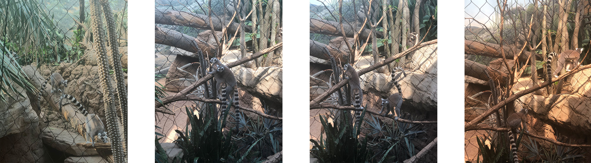
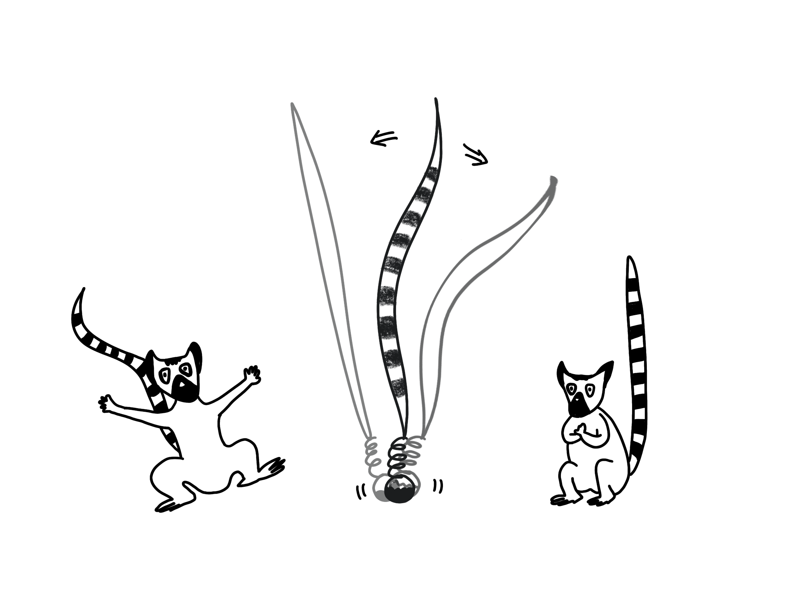
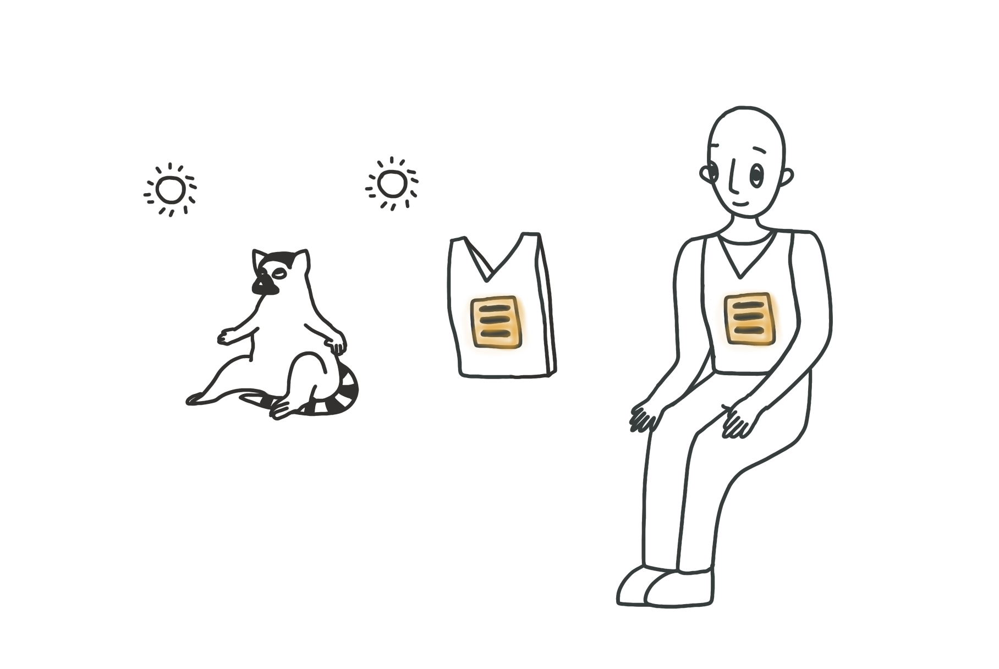

Week 10
Final Proposal
Big Idea: to continue researching on Ring-tailed Lemurs, and to proposal three different types of Enrichment or Empathy projects that contribute to their wellfare and wellbeing.
Animal: Ring-tailed Lemur
Previous enrichment projects and prototypes for Ring-tailed lemurs:
A Modular Foraging Grid-box
An Allo-grooming Device
Where to go from here:
So far, I’ve been invested time and energy studying about Ring-tailed lemurs’ behaviors. However, I’ve been using video/photo/research papers on the internet as my database and major pathway to learn about this intelligent species. I observed and studied about Black and White Ruffed Lemurs when I went to the Central Park Zoo with the class, but I realized their living environment and behaviors can be very different. Black and White Ruffed Lemurs spend a great amount of time in the tree and in the vertical space where Ring-Tailed lemurs spend most of their time on the ground. Ring-tailed lemurs are the most terrestrial of all lemurs, and their social systems are very important in terms of their living styles. They also prefer to live in a dryer area and have very specific behaviors like sunbathing that responds to the environment they are in. Thus, in order to truly dive deeper into designing a better enrichment project for Ring-tailed lemurs, I decided to take a field trip to the Bronx Zoo to do a more thorough observation of Ring-tailed lemurs.
Field Trip: Ring-tailed Lemurs Zoo Visit
Location: the Bronx Zoo in New York City
General Observations:
There are 5 Ring-tailed lemurs on the exhibit. They sometimes run and jump individually, but most of the time, they are observed gathering and doing activities in the generally same areas all the time, which really showcased their social nature.
Environment:
The Ring-tailed lemurs are situated in a giant space in the Madagascar hall, depicting the Malagasy Spiny Forest(different Baobobs, Didierea) along with a different species of lemurs– Collared(Brown) lemurs, critically endangered radiated tortoises and several bird species including vasa parrots, red fodies, grey-headed lovebirds, and ground doves. The environment is dry and hot(70-90f), and the sunlight is quite ample. There are many rocks, trees, and branches/sticks. Lemurs move along these branches and jump among horizontal and vertical surfaces. The divider between the space and zoo visitor is a layer of webbing mesh, which small birds can go through but primitives wouldn’t be able to.
Physiology:
To my surprise, when I saw the Ring-tailed lemurs’ physical presence for the first time, it surprised me of how long their tail is and how tiny their head is compared to their body. Their head is exponentially smaller than their body compared to other species of lemurs. Their tails are just like other lemurs species, who have double the length of their height. Their tails are very important symbols to their species as its used to signify their presence(like human waving when greeting), to keep them balanced, and, for the male Ring-tailed Lemurs in particular, is a comparison play test and to start a stink fight with each other.
Grooming:
one Ring-tailed lemur would lie down and fully expose its body to the other one, and on average, there will be two to three lemurs immediately start to use their comb teeth groom the one who’s lying down. Some will also groom themselves, mostly observed grooming parts like arms.
Feeding:
There’s a specific spot on the west side of the space that Ring-tailed lemurs seem to travel across the room just to get water and food. The spot is hidden behind bushes.
Sitting and resting:
They’d sit or rest on branches everywhere in the space based on where the troop is going. Sometimes, they open up their whole body outward, and sometimes they sit to the side while overlapping its legs.
Sunbathing:
One or two were observed sitting in a posture that’s opening outward, but no obvious sunbathing behavior was observed.
Traveling:
The very east side of the space seems to be the shady territory for the Ring-tailed lemurs. Although they’d be traveling everywhere in the space, including foraging for food on the very west side of the space, they were observed to be always end up coming back to the east side–the shady area where they’d relax and groom each other.
Jumping and Playing:
They are very active in this exhibit. They always like to follow each other if one starts to travel. Their distinctive black and white tail will erect straight up and become the most prominent object you can spot among the forestry. They are very fast and vigilant. They hop from one tree to another stick or surface very easily.
Interaction with other species:
At one point, two Collared lemurs encounter a resting Ring-tailed lemur on a branch, and Ring-tailed lemur just got up and walked away. There was no aggression or play act observed between Ring-tailed lemurs and Collared lemurs. Although they live in the same space, they didn’t seem to interact with each other much.
Ideations
1. An Grooming Device: considering changing form that might allows it to lie down and to roll up.
Continuing the Allo-grooming device, this round of iteration will focus more on the actual physiology of mutual grooming behavior among Ring-tailed lemurs rather than the individual lemur grooming behavior, which was more emphasized on the last round of exploration.
A video of my observation of the mutual grooming behavior:

2.Lemur Play tail: a tail that mimics Ring-tailed lemurs’ look and locomotion and incites playful acts and chasing among lemurs.
Ring-tailed Lemur’s tail is the most symbolic identification as it is more than twice as long as their body. In an environment where their tiny bodies can be easily camouflaged, their tail which erects or shoots into the sky while moving around, which becomes the flag that gives signals to their buddies of their location and direction for follow. Just like human wave at each other, Ring-tailed lemurs use their tails to greet. They also compare each others’ tails to show power and incite playful acts or even stink fights with it. The play tail is an artificial tail that can transform its shape and mimics Ring-tailed lemurs’ tail locomotion. It can be placed anywhere in the space or be thrown to the sky. It will land on the ground safely and even bounce to other spots like how lemurs would.
A thermo-detection vest that helps human understand the sunbathing behavior of Ring-tailed lemurs
Sunbathing is the most unique behavior that Ring-tailed lemurs entail. Most people are intrigued by such a behavior Ring-tailed lemurs would display, and even considers/assumes this amazing behavior is lemurs doing yoga. As much as it looks like yoga, Ring-tailed lemurs are only displaying such behaviors when their body-temperature is low in the morning, and they need the thermo heat energy to heat up their body. A thermo-detection vest will ideally put human in a setting of a chill environment. They will have to open up their chest and expose the heat pad on the vest to a heat source or a warmer direction in order for their vest to give them the right signal that their body is warm and ready to go. Maybe additional sensors will be installed on the inner thighs as “therm-detection” shorts, so the user has to open up their legs along with their arms(Just like how Ring-tailed lemurs do).
